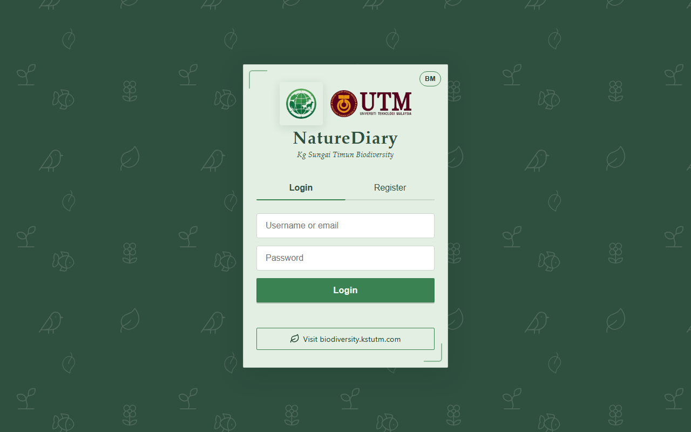

Lost and Found webapp
A web application for reporting lost items by using QR codes. Focus on mobile usability.
Case Studies
From GIS dashboards to full-stack web apps — each card links to a live demo or repo.

A web application for reporting lost items by using QR codes. Focus on mobile usability.

Build a dashboard for visualizing spatial data of tree distribution focusing on CO2 absorption in the Satok area.

A biodiversity reporting Progressive Web App for Kg Sungai Timun, built with UTM — lets villagers and tourists log wildlife sightings with a Node/Express + MySQL backend and real-time chat.